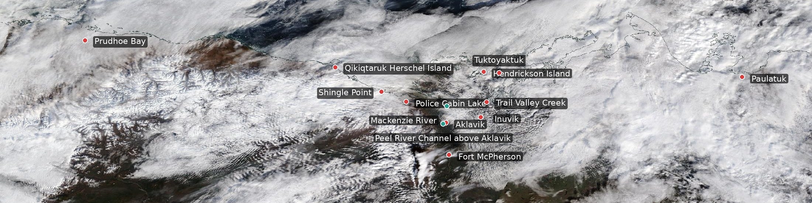
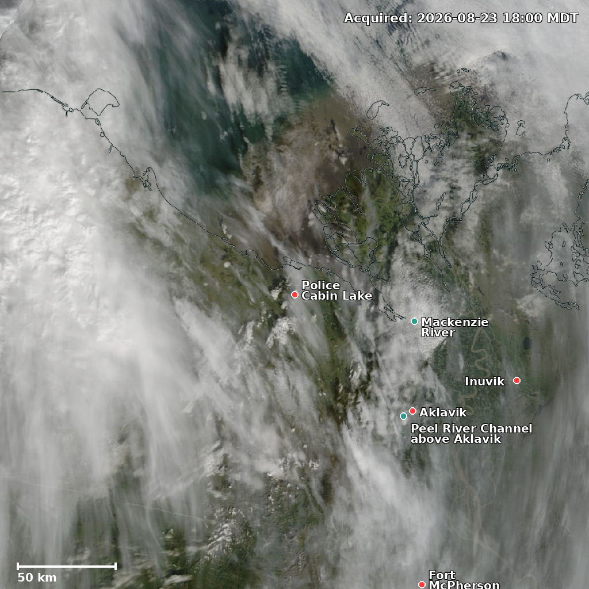
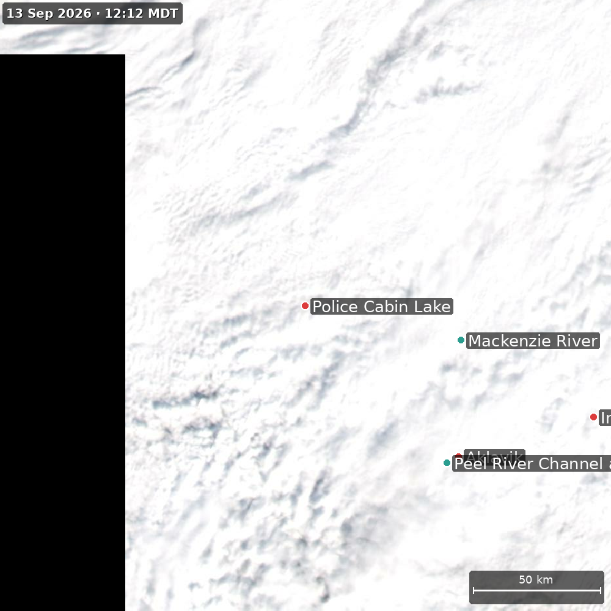
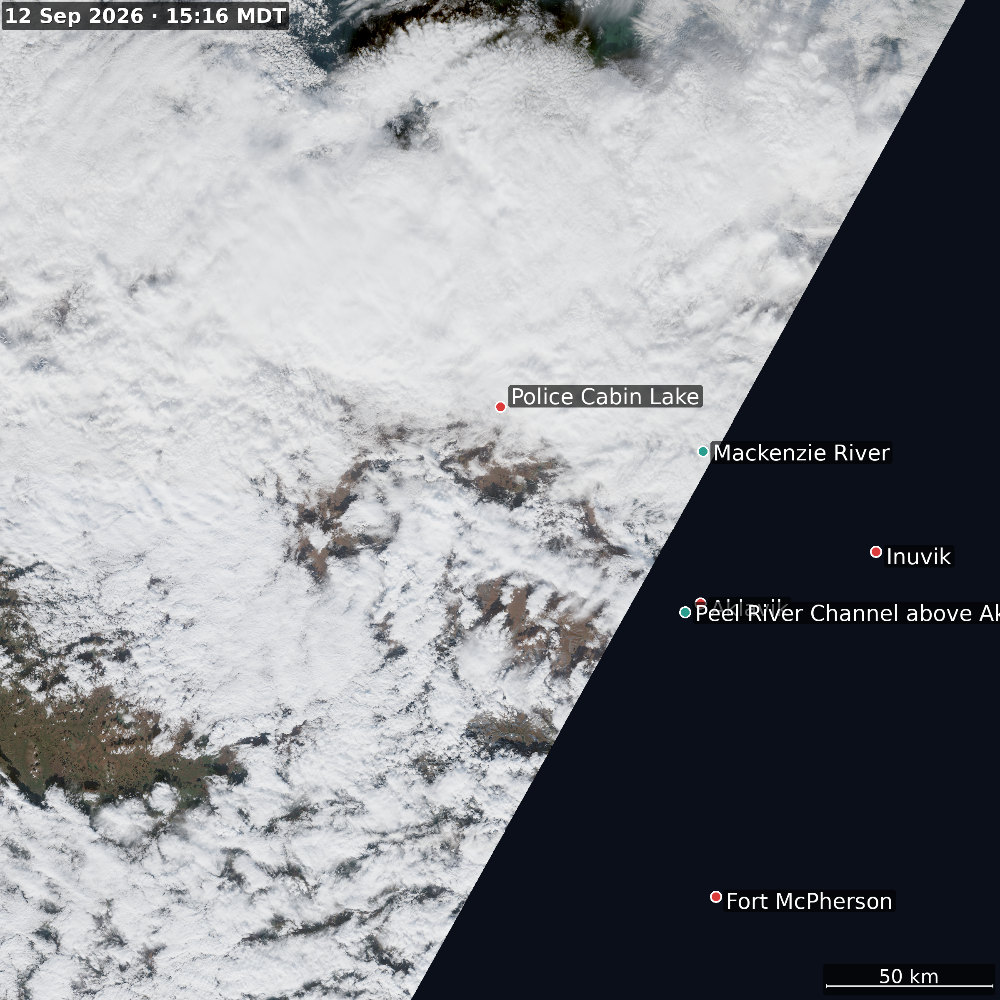
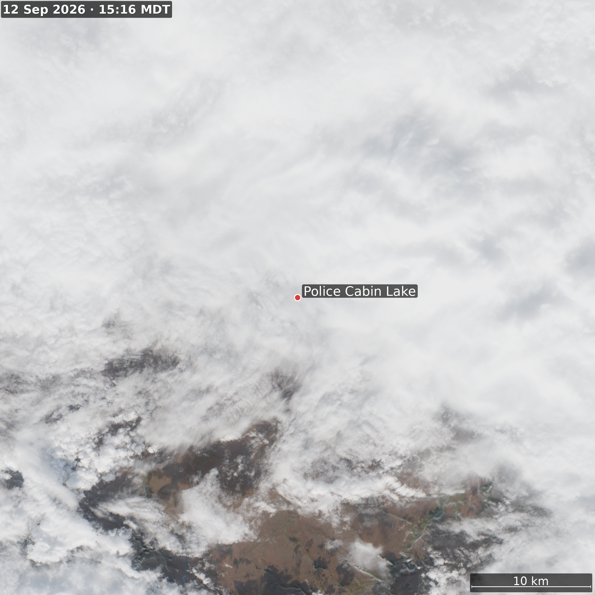
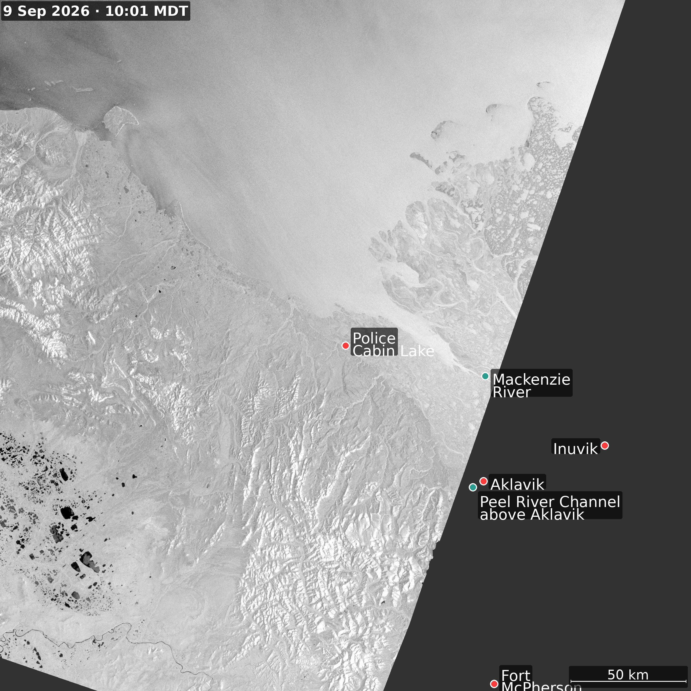
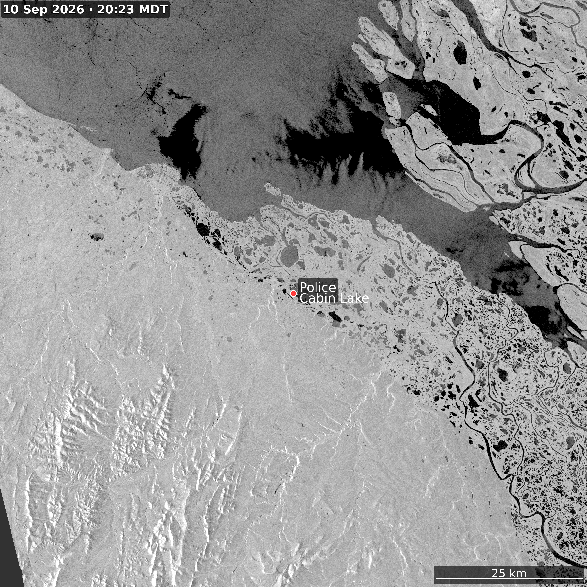

Loading imagery…


Current conditions
Temperature
—°C
Wind
— km/h
Total water level
— m
10-day GEM forecast · click a day for details
Temperature — GEM · 10-day hourly
— °C
Fog risk forecast · 10 days
Clear (≤8%)
Possible (≤20%)
Likely (≤40%)
Dense risk (>40%)
Loading…
⚠️ This model historically underestimates fog risk — field comparisons show confirmed fog events scoring as low as P(fog) = 0.05. Even "Possible" represents a real, non-trivial risk. Thresholds adjusted 2026-08-20 to compensate; underlying probabilities are unchanged. · CAPS/GDPS · XGBoost · Generated — MDT
Marine forecast · Northwest Territories
Wave height — Open-Meteo GWAM · 8-day
— m now
Text forecast
Loading…
Water levels
Total water level
— m
DFO IWLS tide prediction · 7-day
Tide prediction
— m
DFO IWLS · Police Cabin station —
True color imagery

VIIRS NOAA-20 · true color · 150 km · —

Sentinel-2 · true color · 150 km · —

Sentinel-2 · true color · 50 km zoom · —
Lake · River ice · Sentinel-1 SAR

Sentinel-1 SAR · VV polarisation · Police Cabin area · click to zoom

Sea ice · 150 km frame · click to zoom

Sea ice · 50 km frame · click to zoom

Lake · River ice · click to zoom
Climate
Thawing degree days · annual · ERA5
— °C·days this year
Daily wind vectors · last 30 days · Open-Meteo ERA5
Data sources
⚠️
🌡️
💻
Weather alerts — Northwest Territories
Environment Canada
Weather forecast — GEM/ERA5
Open-Meteo · ECCC GEM seamless
Dashboard source code
Alfred Wegener Institute · GitHub
Alfred Wegener Institute · ALFRED Portal · Weather data fetched live on each page load · Images updated by automated workflow ·
Imagery
Forecast
Water
Color
Ice
Links